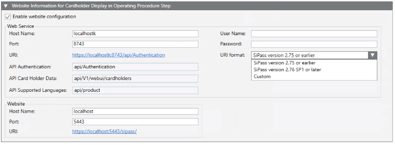

Connecting to a SiPass Integrated Website
This procedure enables Desigo CC to connect to the SiPass integrated website. This is required in order for Desigo CC to display cardholder information during assisted treatment of events. For background information, see Configuring an Operating Procedure with Access Control.
NOTICE

Connecting to the SiPass website requires auto-login of the SiPass user from the Desigo CC client station, with transmission of credentials from the Desigo CC server. This may result in increased security risks. Ensure that clients using this functionality are hardened and protected against unauthorized access. Please check the Cybersecurity Guideline for further details.
Prerequisites
- Desigo CC is configured to integrate a SiPass access control system.
- The connected SiPass integrated system was configured to include a website. See SiPass Integrated Installation Guide (A6V11144323)
- The SiPass integrated system also has the necessary ‘web client’ licenses. See SiPass License Requirements.
Configure Certificates for Accessing the SiPass Website
The SiPass Root CA certificate used for the SiPass website must be imported into the Desigo CC server, and into any Desigo CC clients that will execute the operating procedure with access control step.
- On the computer where the SiPass integrated server is installed:
a. Launch mmc.exe.
b. Add the Certificates snap-in with the option Computer account.
c. In the Trusted Root Certification Authorities store, double-click the certificate issued to SiPass Root CA.
d. From the Details tab, select Copy to File and export the certificate, maintaining the default options. - Copy the exported certificate file to the Desigo CC computer where you want to import it.
- On the Desigo CC computer:
a. Double-click the previously exported certificate file.
b. Select Install certificate.
c. Select the Trusted Root Certification Authorities store.
- The certificate is imported, and the SiPass integrated website can be accessed from the Desigo CC computer without a security warning.
Connect Desigo CC to the SiPass Website
- System Manager is in Engineering mode.
- In System Browser, select Management View.
- Select Project > Field Networks > [SiPass network] > [SiPass server].
- In the SiPass tab, open the Website Information for Cardholder Display in Operating Procedure Step expander.
- Select Enable website configuration.
- In the Web Service group, configure the following fields:
a. Host name: Enter the name of the computer where the SiPass integrated server was installed. This is the same computer as the one configured in the API Server Information expander.
b. Port: This setting must match the Web Service port configured during the setup of the SiPass integrated server.
c. Enter the User name and Password of a different SiPass user.
NOTE: To reduce security risks, it is recommended to select a non-administrator user with read-only access to the SiPass website. - From the URI format drop-down list, select one of the following, depending on the SiPass integrated version:
- SiPass version 2.75 or earlier: Manage connections to SiPass versions from 2.70 to 2.75.
- SiPass version 2.76 SP1 or later: Manage connection to SiPass versions from 2.76 SP1.
(for SiPass 2.76, use the Custom option). - Custom: Provides fields where you can manually enter the SiPass connection data.
When you select the Custom option the fields are prefilled by default with the values for connection to SiPass 2.76 as follows:
- API authentication:sipass/api/api/Authentication
- API cardholder data:sipass/api/api/V1/webui/cardholders
- API supported languages:sipass/api/api/product
You can edit the values as needed. - Click Save
 .
. - In the Operation tab, the Web Service State property indicates
Login Successful. - In the Website group:
a. Configure the Host name and Port of the computer where the website was installed during the SiPass integrated setup. This may be the same computer as the SiPass integrated server, or a separate one.
b. Click the URI field to check the connection. - The SiPass integrated website displays in the default browser. Check this URI with a browser to be sure the website will display properly in the access control step of the operating procedure.
- Click Save .
- In the Operation tab, the Website State property indicates
Connected.
